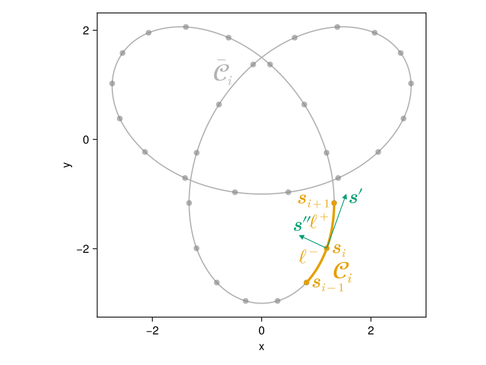

The vortex filament model
The standard vortex filament model (VFM) describes the motion of thin vortex lines in three-dimensional space.
Vortex lines are assumed to be very thin with respect to the scales of interest, such that they can be effectively described as spatial curves.
- The Biot–Savart law
- Desingularisation
- Streamfunction and energy
- Example: vortex ring
- Energy in open domains
- References
The Biot–Savart law
In the VFM, each vortex line induces a velocity field around it given by the Biot–Savart law:
\[\bm{v}(\bm{x}) = \frac{Γ}{4π} ∮_{\mathcal{C}} \frac{(\bm{s} - \bm{x}) \times \mathrm{d}\bm{s}}{|\bm{s} - \bm{x}|^3}\]
where $Γ$ is the vortex circulation (equal to $κ$ for quantum vortices), and $\bm{s}$ is a point along the vortex line. Here $\mathcal{C}$ denotes the whole set of vortex lines in the system.
Mathematically, the above equation derives from the vorticity field:
\[\bm{ω}(\bm{x}) ≡ \bm{\nabla} × \bm{v}(\bm{x}) = Γ ∮_{\mathcal{C}} δ(\bm{s} - \bm{x}) \, \mathrm{d}\bm{s}\]
where $δ$ is Dirac delta function. That is, the vorticity field is singular and localised at the locations of quantum vortices.
The Biot–Savart law describes in particular the motion induced by vortex filaments on themselves and on surrounding vortex lines. The VFM thus describes the collective motion of a set of mutually-interacting vortex filaments which obey the Biot–Savart law. Note that the Biot–Savart integral is singular when evaluated at a vortex location $\bm{s}' ∈ \mathcal{C}$, and the integral must be desingularised by taking into account the finite thickness of the vortex core. The VFM also accounts for vortex reconnections, which occur when two vortex segments are sufficiently close to each other and which change the topology of the vortex system.
Desingularisation
In the VFM, one usually wants to evaluate the Biot–Savart law at locations $\bm{x} = \bm{s}_0$ on the vortex. It is clear that the Biot–Savart integral, as written above, is singular when evaluated at a point $\bm{s}_0$ on the curve.
The divergence of the Biot–Savart integral is of course unphysical, and is related to the fact that the actual thickness of vortex lines not really infinitesimal but finite. The standard way of accounting for the radius $a$ of the vortex core is to split the integral into local and non-local parts:
\[\newcommand{\vvec}{\bm{v}} \newcommand{\svec}{\bm{s}} \newcommand{\dd}{\mathrm{d}} \newcommand{\sj}{\svec_0} \vvec(\sj) = \frac{Γ}{4π} ∫_{\mathcal{C}_0} \frac{(\svec - \sj) \times \dd\svec}{|\svec - \sj|^3} + \frac{Γ}{4π} ∫_{\mathcal{C} ∖ \mathcal{C}_0} \frac{(\svec - \sj) \times \dd\svec}{|\svec - \sj|^3} = \vvec_{\text{local}}(\sj) + \vvec_{\text{non-local}}(\sj)\]
Here $\mathcal{C}_0$ denotes a portion of the set of curves $\mathcal{C}$ which is in the neighbourhood of the point of interest $\bm{s}_0$.
To illustrate this, the figure below shows a trefoil knot curve, or rather its projection on the XY plane. Note that here we represent a discretised version of the curve, where the number of degrees of freedom is finite and controlled by the positions of the markers.

Code for this figure
using CairoMakie
CairoMakie.activate!(type = "svg", pt_per_unit = 1.0)
Makie.set_theme!()
using VortexPasta.Filaments
using VortexPasta.Filaments: Vec3
using VortexPasta.PredefinedCurves: define_curve, TrefoilKnot
trefoil = define_curve(TrefoilKnot())
N = 32
i = (N ÷ 2) + 3
refinement = 8
colours = Makie.wong_colors()
f = Filaments.init(trefoil, ClosedFilament, N, CubicSplineMethod())
fig = Figure(Text = (fontsize = 24,))
ax = Axis(fig[1, 1]; aspect = DataAspect(), xlabel = "x", ylabel = "y")
hidexdecorations!(ax; label = false, ticklabels = false, ticks = false)
hideydecorations!(ax; label = false, ticklabels = false, ticks = false)
# Plot complete filament in grey
let color = (:grey, 0.6)
plot!(ax, f; refinement, color, linewidth = 1.5)
text!(
ax, f(i ÷ 2 + 1, 0.6);
text = L"\bar{\mathcal{C}}_{\!i}", align = (:right, :bottom), color,
fontsize = 28,
)
end
# Plot point of interest and local segment around it
let color = colours[2], arrowcol = colours[3]
# Plot nodes (i - 1):(i + 1)
scatter!(ax, getindex.(Ref(f), (i - 1):(i + 1)); color)
text!(
ax, f[i - 1] + Vec3(0.08, 0.0, 0.0);
text = L"\mathbf{s}_{i - 1}", align = (:left, :center), color,
)
text!(
ax, f[i] + Vec3(0.08, 0.0, 0.0);
text = L"\mathbf{s}_i", align = (:left, :center), color,
)
text!(
ax, f[i + 1] + Vec3(-0.08, 0.08, 0.0);
text = L"\mathbf{s}_{i + 1}", align = (:right, :center), color,
)
# Plot local segments
let ζs = range(0, 1; length = refinement + 1)
lines!(ax, f.(i - 1, ζs); color, linewidth = 3)
lines!(ax, f.(i, ζs); color, linewidth = 3)
text!(
f(i - 1, 0.5);
text = L"ℓ^{-}", align = (:right, :bottom), color,
)
text!(
f(i, 0.6) + Vec3(-0.08, 0, 0);
text = L"ℓ^{+}", align = (:right, :center), color,
)
text!(
ax, f(i - 1, 0.7) + Vec3(0.2, 0.0, 0.0);
text = L"\mathcal{C}_{\!i}", align = (:left, :top), color,
fontsize = 28,
)
end
# Plot tangent and curvature vectors (assuming this is a 2D plot...)
s⃗ = f[i]
t̂ = f[i, UnitTangent()]
ρ⃗ = f[i, CurvatureVector()]
arrows!(ax, [s⃗[1]], [s⃗[2]], [t̂[1]], [t̂[2]]; color = arrowcol)
arrows!(ax, [s⃗[1]], [s⃗[2]], [ρ⃗[1]], [ρ⃗[2]]; color = arrowcol)
text!(
ax, s⃗ + t̂ + Vec3(0.05, 0.0, 0.0);
text = L"\mathbf{s}′", align = (:left, :center), color = arrowcol,
)
text!(
ax, s⃗ + ρ⃗ + Vec3(0.0, 0.04, 0.0);
text = L"\mathbf{s}″", align = (:center, :bottom), color = arrowcol,
)
end
save("trefoil_local.svg", fig)Here, to evaluate the velocity induced by the trefoil vortex on its point $\bm{s}_i$, we split the curve into a local part $\mathcal{C}_i$ (orange) and a non-local part $\bar{\mathcal{C}}_i = \mathcal{C} ∖ \mathcal{C}_i$ (grey). The non-local part is far from the singularity, so there is no need to modify the Biot–Savart integral as written above. As for the local part, we can approximate it using a Taylor expansion of the Biot–Savart integral about $\bm{s}_i$ and truncating the integral at a small distance $ϵ ∝ a$ from the singularity. See for instance Arms and Hama (1965).
More explicitly, from a Taylor expansion of $\bm{s}(ξ)$ close to $\bm{s}_i = \bm{s}(ξ_i)$, one can show that the Biot–Savart integrand is approximately
\[\frac{[\bm{s}(ξ) - \bm{s}_i] × \bm{s}'(ξ)}{|\bm{s}(ξ) - \bm{s}_i|^3} ≈ \frac{\bm{s}_i' × \bm{s}_i''}{2 |ξ - ξ_i|},\]
where $ξ$ is the curve arc length and derivatives (primes) are with respect to $ξ$. Note that $\bm{s}_i'$ and $\bm{s}_i''$ are respectively the unit tangent and curvature vectors at $\bm{s}_i$ (see figure).
Now, if one integrates e.g. from $\bm{s}(ξ_i + ϵ)$ to $\bm{s}_{i + 1} = \bm{s}(ξ_{i + 1})$, one gets:
\[\bm{v}_i^+ ≈ \frac{Γ}{4π} \frac{\bm{s}_i' × \bm{s}_i''}{2} ∫_{ξ_i + ϵ}^{ξ_{i + 1}} \frac{\mathrm{d}ξ}{ξ - ξ_i} = \frac{Γ}{4π} \frac{\bm{s}_i' × \bm{s}_i''}{2} \ln \left( \frac{ℓ^+}{ϵ} \right),\]
where $ℓ^+ = ξ_{i + 1} - ξ_i$ is the length of the curve segment $\bm{s}_i → \bm{s}_{i + 1}$ (see figure). Doing something similar for the segment $\bm{s}_{i - 1} → \bm{s}(ξ_i - ϵ)$ and adding both contributions, we obtain the local velocity:
\[\bm{v}_{\text{local}}(\bm{s}_i) = \frac{Γ}{4π} \bm{s}_i' × \bm{s}_i'' \ln \left( \frac{\sqrt{ℓ^- ℓ^+}}{ϵ} \right) = \frac{Γ}{4π} \bm{s}_i' × \bm{s}_i'' \left[ \ln \left( \frac{2\sqrt{ℓ^- ℓ^+}}{a} \right) - Δ \right],\]
where we have taken the cut-off distance to be $ϵ = \frac{e^Δ a}{2}$ (Saffman, 1993; §11.2). Here $Δ$ is a coefficient which depends on the form of the vorticity profile within the vortex core (see the vortex ring tutorial).
In the code, the local velocity is sometimes referred to as the LIA (local induction approximation) term, as it has been historically used as a fast (and incomplete) approximation to the full Biot–Savart integral.
Streamfunction and energy
Everything that has been discussed until now applies to the velocity derived from the Biot–Savart law. Sometimes we may also be interested in the streamfunction vector $\bm{ψ}$. In particular, the streamfunction values on vortex lines can be used to estimate the total energy of the vortex filament system.
The Biot–Savart law for the streamfunction
In three dimensions, the streamfunction is a vector field which is directly related to the velocity and vorticity by
\[\bm{v} = \bm{∇} × \bm{ψ} \quad \Rightarrow \quad \bm{ω} = \bm{∇} × \bm{v} = -∇²\bm{ψ}\]
That is, if one knows the vorticity field $\bm{ω}$, then the streamfunction is the solution of a Poisson equation with the vorticity as source term. The solution can be written in terms of the Green's function $G(\bm{r}) = 1/(4πr)$ associated to the 3D Poisson equation:
\[\newcommand{\xvec}{\bm{x}} \newcommand{\yvec}{\bm{y}} \newcommand{\vort}{\bm{ω}} \newcommand{\dd}{\mathrm{d}} \bm{ψ}(\xvec) = (G ∗ \vort)(\xvec) = ∫ G(\xvec - \yvec) \vort(\yvec) \, \dd^3\yvec = \frac{1}{4π} ∫ \frac{\vort(\yvec)}{|\xvec - \yvec|} \, \dd^3\yvec\]
Using the fact that the vorticity has the form $\bm{ω}(\bm{x}) = Γ ∮_{\mathcal{C}} δ(\bm{s} - \bm{x}) \, \mathrm{d}\bm{s}$ leads to the Biot–Savart law for the streamfunction:
\[\newcommand{\xvec}{\bm{x}} \newcommand{\svec}{\bm{s}} \newcommand{\vort}{\bm{ω}} \newcommand{\dd}{\mathrm{d}} \bm{ψ}(\xvec) = Γ ∮_{\mathcal{C}} G(\xvec - \svec) \, \dd\svec = \frac{Γ}{4π} ∮_{\mathcal{C}} \frac{\dd\svec}{|\xvec - \svec|}\]
Note that the usual Biot–Savart law for the velocity can be recovered by taking the curl of the above expression:
\[\newcommand{\xvec}{\bm{x}} \newcommand{\svec}{\bm{s}} \newcommand{\vvec}{\bm{v}} \newcommand{\vort}{\bm{ω}} \newcommand{\dd}{\mathrm{d}} \newcommand{\curl}{\bm{∇} ×} \vvec(\xvec) = \curl \bm{ψ}(\xvec) = Γ ∮_{\mathcal{C}} \bm{∇} G(\xvec - \svec) × \dd\svec = -\frac{Γ}{4π} ∮_{\mathcal{C}} \frac{(\xvec - \svec) × \dd\svec}{|\xvec - \svec|^3}\]
where we have used $\bm{∇} G(\bm{r}) = -\bm{r} / (4π r^3)$.
Connection with kinetic energy
The kinetic energy of the system is given by
\[\newcommand{\xvec}{\bm{x}} \newcommand{\dd}{\mathrm{d}} E = \frac{ρ}{2} ∫ \bm{v}(\xvec) ⋅ \bm{v}(\xvec) \, \dd^3\xvec = \frac{ρ}{2} ∫ \bm{ψ}(\xvec) ⋅ \bm{ω}(\xvec) \, \dd^3\xvec\]
where the second equality is obtained using integration by parts and assuming we're in a periodic domain (or, alternatively, that the velocity goes to zero far from the vortices), and $ρ$ is the fluid density. As before, using $\bm{ω}(\bm{x}) = Γ ∮_{\mathcal{C}} δ(\bm{s} - \bm{x}) \, \mathrm{d}\bm{s}$ leads to
\[\newcommand{\svec}{\bm{s}} \newcommand{\dd}{\mathrm{d}} E = \frac{ρΓ}{2} ∮_{\mathcal{C}} \bm{ψ}(\svec) ⋅ \dd\svec\]
That is, the energy is simply the line integral of the tangential component of the streamfunction along vortex filaments.
Note that, if one uses the expression for $\bm{ψ}(\bm{x})$ from the previous section, one can directly write the total energy from the configuration of the vortex lines:
\[\newcommand{\svec}{\bm{s}} \newcommand{\dd}{\mathrm{d}} E = \frac{ρΓ^2}{8π} ∮_{\mathcal{C}} ∮_{\mathcal{C}}' \frac{\dd \svec ⋅ \dd \svec_1}{|\svec - \svec_1|}\]
where the prime over the integral is to account for the desingularisation of the streamfunction integral (see section below).
Desingularisation of the streamfunction integral
As for the velocity, the Biot–Savart integral for the streamfunction is singular when evaluated on a vortex line. We can use the same approach to desingularise it, by splitting the integral onto a local and a non-local part.
Using the same notation as for the velocity, a leading-order Taylor expansion of the integrand leads to:
\[\bm{ψ}_i^+ ≈ \frac{Γ}{2π} \frac{\bm{s}_i'}{2} ∫_{ξ_i + ϵ'}^{ξ_{i + 1}} \frac{\mathrm{d}ξ}{ξ - ξ_i} = \frac{Γ}{2π} \frac{\bm{s}_i'}{2} \ln \left( \frac{ℓ^+}{ϵ'} \right)\]
and then to:
\[\bm{ψ}_{\text{local}}(\bm{s}_i) = \frac{Γ \bm{s}_i'}{2π} \ln \left( \frac{\sqrt{ℓ^- ℓ^+}}{ϵ'} \right)\]
Note that, here, the cut-off distance $ϵ'$ is not necessarily the same as for the velocity. In fact, if one considers a system of non-colliding vortex rings, one can show that, for the system to be Hamiltonian, one needs to take $ϵ' = \frac{e^{Δ - 1} a}{2}$ (as verified in the example below). This finally leads to:
\[\bm{ψ}_{\text{local}}(\bm{s}_i) = \frac{Γ \bm{s}_i'}{2π} \left[ \ln \left( \frac{2 \sqrt{ℓ^- ℓ^+}}{a} \right) - (Δ - 1) \right]\]
Example: vortex ring
For a circular vortex ring of radius $R$, one can analytically compute the non-local Biot–Savart integrals. Under the approximation that the local segments are much smaller than the vortex radius ($ℓ^- ∼ ℓ^+ ≪ R$), one obtains:
\[\newcommand{\vvec}{\bm{v}} \newcommand{\psivec}{\bm{ψ}} \newcommand{\svec}{\bm{s}} \newcommand{\dd}{\mathrm{d}} \newcommand{\sj}{\svec_i} \begin{align*} \vvec_{\text{non-local}}(\sj) &= \frac{Γ}{4π} \sj' × \sj'' \ln \left( \frac{8R}{ℓ^*} \right) \\ \psivec_{\text{non-local}}(\sj) &= \frac{Γ}{2π} \sj' \left[ \ln \left( \frac{8R}{ℓ^*} \right) - 2 \right] \end{align*}\]
where we have defined $ℓ^* = 2\sqrt{ℓ^- ℓ^+}$. In the expression for the velocity, $\bm{s}_i' × \bm{s}_i'' = \hat{\bm{z}} / R$, where $\hat{\bm{z}}$ is the direction orthogonal to the plane where the ring lives. As a reminder, $\bm{s}_i'$ is the local unit tangent vector, while the second derivative $\bm{s}_i''$ corresponds to the curvature vector (oriented towards the "interior" of the curve) and whose magnitude is $1/R$.
Adding the local integrals obtained by desingularisation leads to:
\[\newcommand{\vvec}{\bm{v}} \newcommand{\psivec}{\bm{ψ}} \newcommand{\svec}{\bm{s}} \newcommand{\dd}{\mathrm{d}} \newcommand{\sj}{\svec_i} \begin{align*} \vvec(\sj) &= \frac{Γ \hat{\bm{z}}}{4πR} \left[ \ln \left( \frac{8R}{a} \right) - Δ \right] \\ \psivec(\sj) &= \frac{Γ \sj'}{2π} \left[ \ln \left( \frac{8R}{a} \right) - (Δ + 1) \right] \end{align*}\]
The first expression obtained is the well-known self-induced velocity of a thin vortex ring.
From the second expression, we can easily obtain the energy associated to the vortex ring:
\[E = \frac{ρ Γ^2 R}{2} \left[ \ln \left( \frac{8R}{a} \right) - (Δ + 1) \right]\]
We can finally check that, with the desingularisation procedure described in the previous sections, the vortex ring obeys Hamilton's equation $v = ∂E/∂p$ (Roberts and Donnelly, 1970). Here $\bm{p}$ is the vortex impulse (Saffman, 1993):
\[\bm{p} = \frac{ρ Γ}{2} ∮_{\mathcal{C}} \bm{s} × \mathrm{d}\bm{s}\]
For a vortex ring, $\bm{p} = ρ Γ π R^2 \hat{\bm{z}}$, that is, the impulse is directly related to the area enclosed by the vortex.
Noting that
\[\frac{∂E}{∂R} = \frac{ρ Γ^2}{2} \left[ \ln \left( \frac{8R}{a} \right) - Δ \right] \quad \text{and} \quad \frac{∂\bm{p}}{∂R} = 2ρ ΓπR \hat{\bm{z}},\]
we finally obtain that
\[\frac{∂E}{∂p} = \frac{Γ}{4πR} \left[ \ln \left( \frac{8R}{a} \right) - Δ \right] = v_{\text{ring}}\]
Energy in open domains
In open (non-periodic and unbounded) domains, assuming that the velocity field goes to zero sufficiently far from the vortices, a commonly used alternative expression for the energy is (Saffman, 1993):
\[E₀ = ρ Γ ∮_{\mathcal{C}} \bm{v} ⋅ (\bm{s} × \mathrm{d}\bm{s})\]
which only requires knowing the velocity $\bm{v}$ on the vortex filaments. Besides the above assumptions, this assumes that the fluid is incompressible everywhere.
However, this definition does not satisfy Hamilton's equation, meaning that this "energy" may present fluctuations in time in cases where the previous definition will be conserved.
This can be easily shown for the case of a vortex ring, in which case applying this definition to the expression for the vortex ring velocity leads to
\[E₀ = \frac{ρ Γ^2 R}{2} \left[ \ln \left( \frac{8R}{a} \right) - Δ \right]\]
which overestimates the actual vortex ring energy by a $ρ Γ^2 R / 2$ term (and thus doesn't satisfy Hamilton's equation).
These differences might be explained by the fact that this second definition doesn't take into account the internal structure of the vortices, unlike the first definition which does this via the local contribution to the streamfunction.
References
A classical reference for the VFM is Schwarz (1985), while a more modern review is given by Hänninen and Baggaley (2014).